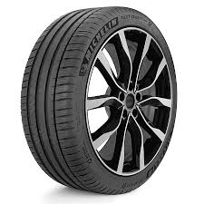

ככל שחתך הצמיג נמוך יותר, פוחתת נוחות הנסיעה כיוון שיש פחות אוויר המשכך את הזעזועים. עם זאת, מכיוון שהקיר הנמוך של הצמיג פחות מתעוות מתקבלת אחיזה טובה יותר המורגשת בעיקר בפניות. גם רוחב גדול של צמיג תורם לאחיזה עקב פני שטח גדול יותר עם הכביש, אך משפיע לרעה על צריכת הדלק כיוון שיותר שטח של הצמיג מתעוות בכל תזוזה של הצמיג ולכן צריך יותר כוח כדי לסובב אותו, כלי רכב ספורטיביים משתמשים בדרך כלל בצמיגים רחבים וחתך נמוך על מנת לשפר את האחיזה. לעומת זאת כלי רכב רגילים עושים שימוש בצמיגים צרים ובעלי חתך גבוה יותר לטובת נוחות נסיעה וצריכת דלק משופרת במכוניות מרוץ נהוג להשתמש בצמיג מיוחד בעל הרכב גומי רך יותר המספק אחיזה גבוהה יותר אך גורם לשחיקה מהירה עד כי יש להחליף את הצמיג מספר פעמים במהלך המרוץ. כל עוד המרוץ מתקיים על גבי כביש יבש, פני הסוליה של צמיג זה תהא לרוב חלקה לחלוטין במרוץ רטוב יעשה שימוש בצמיגים בעלי סוליה עם חריצים. חריצים אלו יהיו בדרך כלל מעטים ושונים מחריצים המופיעים בצמיג רגיל. בגלל התאמת הצמיגים המדויקת לתנאים מסוימים
הוא המבנה הפנימי של הצמיג המורכב ממיתרים צפופים העטופים בשכבת גומי (הנקראים יחד "בדים מגוממים" או רבדים) ועוברים בין חישוק לחישוק דרך הדופן והסוליה. השלד יכול להיות בנוי מרובד אחד או מכמה רבדים, המכילים מיתרים ומצופים כאמור בגומי הנחת שכבות השלד לרוחב איפשרה למיתרי הכרכס לשאת את הכוח שמפעיל לחץ האוויר בכיוון הרדיאלי בלבד, ואיפשרה להפחית את שכבות הכרכס עד כדי רובד אחד וכן לבנות את הצמיגים עם מיתרי פלדה. משקלו של הצמיג פחת. העברת הכוח מהרכב לכביש גדלה, ההתנגדות לגלגול פחתה והקטינה את צריכת הדלק. אף על פי שכיום רוב מוחלט של צמיגי הנוסעים הם רדיאליים, עדיין מסמנים אותם על ידי הטבעת האות R על דופן הצמיג. המעבר לסוג צמיגים שונה חייב שינוי של משככי הזעזועים וכיוון שונה של זוויות ההיגוי ברכב כדי למנוע שחיקה מוגברת
חשיבותו של לחץ אוויר תקין בצמיג היא גבוהה, כיוון שלחץ לא תקין עשוי לגרום לשחיקה מוגברת, צריכת דלק גבוהה, אחיזה גרועה, התפוצצות תוך כדי נסיעה ועוד לחץ האוויר המומלץ לצמיג על ידי היצרן יכול להופיע בספר הרכב, על קורת הצד שליד הנהג (עם פתיחת הדלת), בתא הכפפות, מעל לגלגל (לדוגמה: ל"א 30) או על מכסה מכל הדלק. בכלי רכב המיועדים לשאת מטען רב או נוסעים נוספים, מופיעה בדרך כלל המלצה על לחץ אוויר גבוה יותר בגלגלים האחוריים
